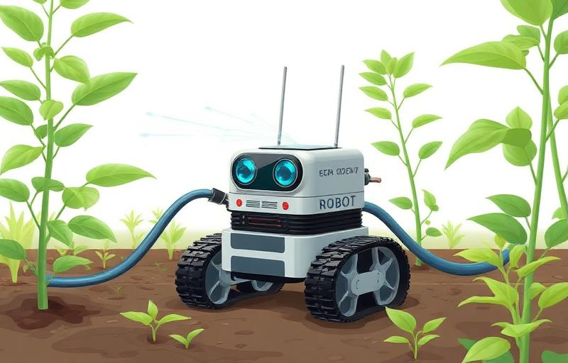
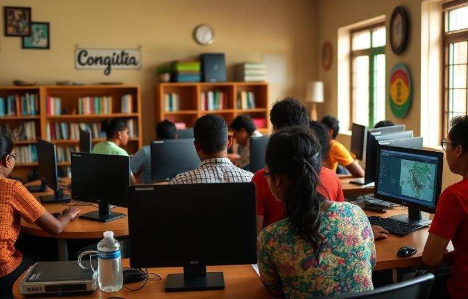
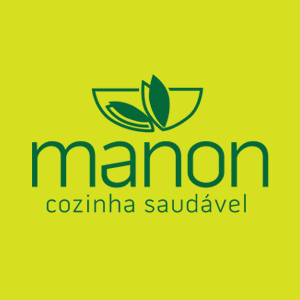

Aqui estão alguns dos projetos que desenvolvi ao longo da faculdade. Cada um representou uma oportunidade de aplicar conhecimentos na prática e trabalhar em equipe para resolver problemas reais.

Projeto desenvolvido em grupo na cadeira de Robótica Inclusiva. Criamos um robô autônomo que mede a umidade do solo e, quando detecta que está seco, libera água automaticamente pela mangueira, parando de regar quando o solo atinge a umidade ideal.

Projeto social realizado na cadeira de Computação, Sociedade e Sustentabilidade. Em grupo, apoiamos os voluntários da Biblioteca Comunitária Caranguejo Tabaiares com um mini curso de Canva e Google Drive, ajudando-os a organizar seus trabalhos e fazer marketing de suas atividades.

Projeto desenvolvido em grupo: um site de vendas para uma empresa que fornece comida saudável congelada já pronta. O cliente só precisa comprar e esquentar a refeição, simplificando o dia a dia de quem busca alimentação saudável.